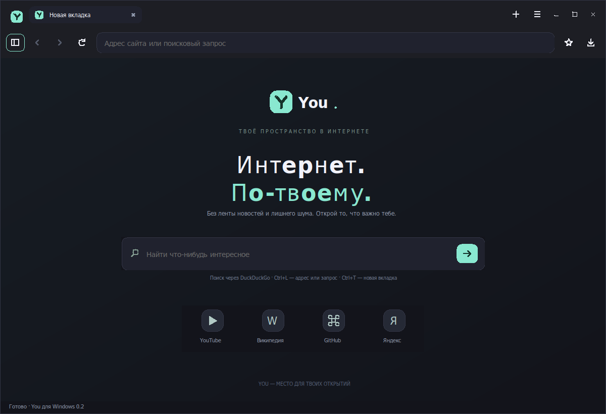

Вкладки без хаоса
Закрепляй важное, дублируй страницы, выключай лишний звук. Потерял вкладку? Найди её по названию.
Всё под контролемМеньше лишнего. Больше твоего.
You — простой браузер для Linux, в котором всё важное уже под рукой.
Версия 0.2 · архив .tar.gz · Без регистрации
Архив приложения. Для запуска нужны Python и системные GTK / WebKitGTK.
Интернет.
По-твоему.
ВОЗМОЖНОСТИ LINUX-ВЕРСИИ 0.2
Android и Windows — отдельные первые версии.
Их возможности описаны возле загрузок ниже.
Закрепляй важное, дублируй страницы, выключай лишний звук. Потерял вкладку? Найди её по названию.
Всё под контролемБоковая панель закладок, история и локальные подсказки адреса. Импортируй свои ссылки и продолжай с привычного.
Сохраняй свои открытияПриватные окна не записывают историю и не сохраняют данные сайтов после закрытия. Это не VPN и не анонимизация.
Отдельный контекстВозвращай обычные окна после перезапуска. Сохраняй подборки сайтов под своим названием. Формы не восстанавливаются.
Твой ритм работыВ версии 0.2 добавлены 20 работающих функций удобства. Внутри есть каталог из 500 идей: остальные 480 отмечены как план, а не готовые возможности.
ПОРА ПОЗНАКОМИТЬСЯ ПОБЛИЖЕ
Архив с приложением, исходным кодом и инструкцией.
Без истории, cookies и профилей пользователей.
Загружаем контрольную сумму…Не удалось прочитать сведения о релизе. Обнови страницу или открой информацию о релизе внизу сайта.
ТЕПЕРЬ НЕ ТОЛЬКО LINUX
Android 0.2 · Windows 0.2
Не полный перенос Linux-версии
Тёмный стиль Linux и Windows: мятные акценты, вкладки сверху, векторные кнопки, скруглённая адресная строка, меню и поиск по странице. Новая стартовая страница «Интернет. По-твоему.» с быстрыми ссылками и закладками.
Android 8.0+ и системный WebView. Версия 0.2 подписана тем же ключом, что 0.1: устанавливай поверх, не удаляя приложение, чтобы сохранить его данные. Проверка на Android-устройстве пока не выполнена.
Без приватного режима и VPN. Загрузка файлов передаётся внешнему приложению. На Quest это не VR-браузер: установка и работа в 2D не проверены.
Скачать APK 0.2 You-0.2-android.apk · размер в данных сборокСмотри platforms.jsonТеперь в тёмном стиле You для Linux: вкладки сверху, мятные акценты, новая вкладка с поиском и быстрыми ссылками, боковая панель закладок и тёмное меню.
Windows 10/11 x64 и установленный WebView2 Runtime. Это переносимый EXE, не установщик. .NET включён; WebView2 используется из системы.
Интерфейс проверен в Wine. Работа сайтов в Wine / PortProton не гарантируется: в тестах наблюдался сбой процесса отрисовки WebView2. На настоящей Windows версия пока не проверена. Без приватного режима и VPN. EXE без Authenticode-подписи; защиту Windows отключать не нужно.

Снимок нативного интерфейса в отдельном тестовом окне Wine, не макет и не доказательство работы сайтов.
Смотри platforms.jsonЗапуск на настоящих Android- и Windows-устройствах пока не проверен. Нативный интерфейс Windows проверен отдельно; совместимость браузерного движка с Wine остаётся ограничением. Камера, микрофон и геолокация сайтам в этих версиях недоступны. Linux-приложение не изменено. Размеры, требования и контрольные суммы ↗
Не удалось загрузить сведения об APK/EXE. Перед скачиванием проверь данные сборок по ссылке выше.
ЗАПУСК НА LINUX
Сначала проверь зависимости.
Затем скачай, распакуй и запускай.
Выбери отдельную папку для распаковки. Это архив приложения для Linux, не установщик Windows или Android.
Нужны Python 3.10+, PyGObject, GTK 4.10+, libadwaita 1.5+ и WebKitGTK 6.0. Они устанавливаются через пакетный менеджер Linux.
Открой терминал в папке с архивом и выполни команды справа. Браузер по умолчанию не изменится.
# Распакуй в отдельной папке
tar -xzf You-0.2-linux.tar.gz
cd You-0.2
./run.sh
# По желанию: добавить в меню
python3 install_launcher.pyЕСЛИ ОСТАЛИСЬ ВОПРОСЫ
Без мелкого шрифта
и больших обещаний.
You — отдельное настольное приложение. Сайты открывает системный движок WebKitGTK. Это не iframe и не оболочка, запускающая другой браузер.
Есть Linux-версия 0.2, Android 0.2 для Android 8.0+ (APK) и Windows 0.2 для Windows 10/11 x64 (EXE). Android требует системный WebView, Windows — WebView2 Runtime. Их запуск на настоящих целевых устройствах ещё не проверен; работа сайтов через Wine / PortProton не гарантируется. Полного набора возможностей Linux в этих версиях нет. Версии для iPhone нет.
Android: скачай или перенеси APK на своё устройство, открой файл и разреши установку для выбранного источника, если система попросит. Windows: сохрани EXE в отдельную папку и запусти. Если WebView2 отсутствует, You покажет адрес официального сайта Microsoft; автоматической установки нет. Не отключай антивирус или системную защиту. localhost работает только на этом ПК. Для других устройств в той же домашней сети сайт запускается с --lan: используй напечатанный сетевой адрес компьютера вместо localhost.
Это первая локальная поставка: архив с кодом, ресурсами и скриптом запуска. Python-библиотеки и браузерный движок используются из системы. Готовый автономный AppImage здесь не предлагается.
Нет. В архив попадают только файлы приложения из явного списка. История, cookies, пароли, профили, кэш и скачанные файлы не включаются. Профиль создаётся на компьютере, где ты запускаешь You.
Обход блокировок в You не настроен. Доступность YouTube зависит от сети. Браузер не обещает обойти ограничения провайдера.
Новый архив приложения скачивается отдельно. WebKitGTK обновляется через обновления Linux. Проверку сертификатов и системную защиту You не отключает.
Меньше лишнего.
Больше You.